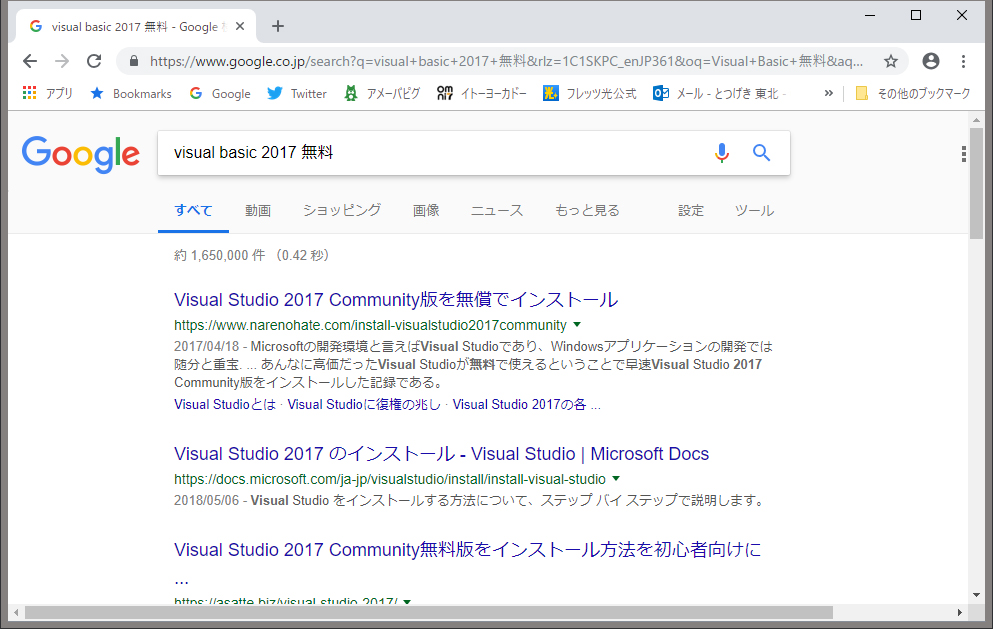
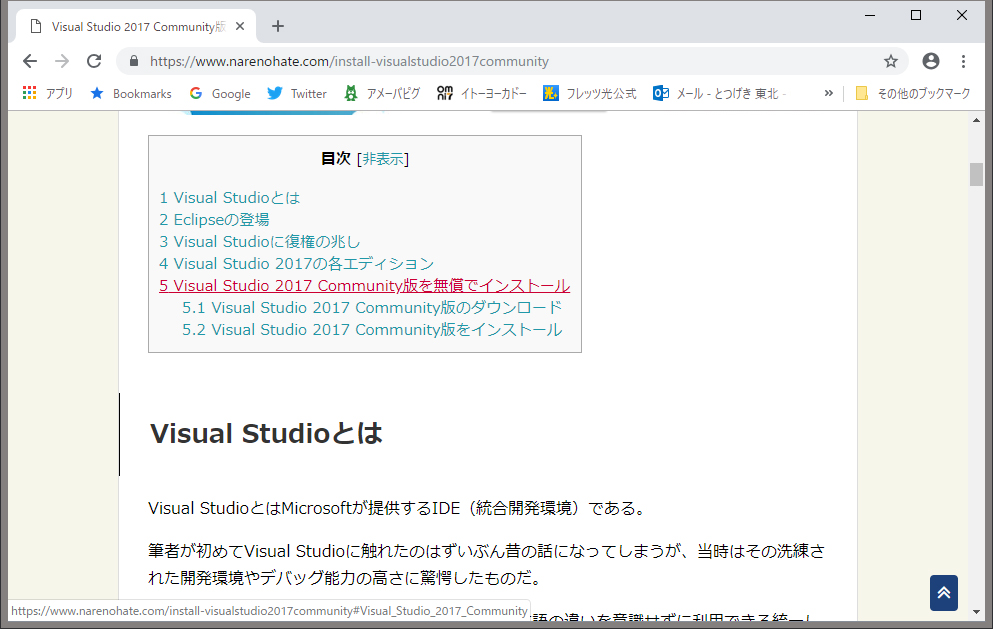
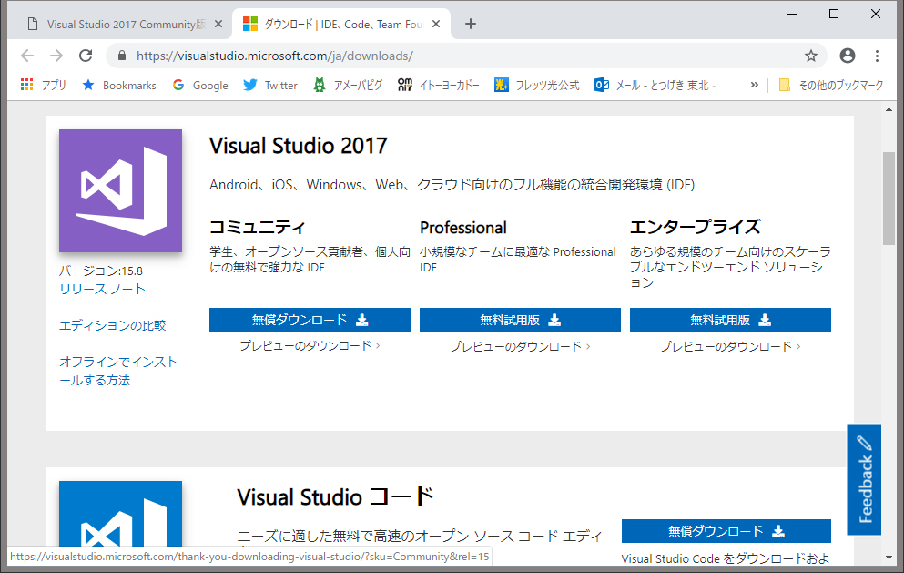
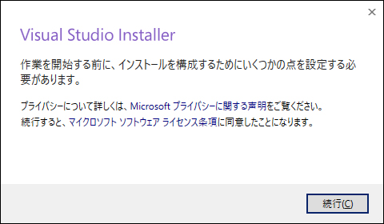

(東京大学教養学部において行った講義を基に発展させ、Web上に再現)
 とつげき東北とつげき東北
とつげき東北とつげき東北開発環境の導入
まずは「Visual Basic 2017 無料」で検索してください。
一番上（？）に表示される「Visual Studio 2017
Communitｙ版を無償でインストール」をクリック。

色々と解説がありますが、「５」の、インストール方法のところを読んでください。

記載のとおり、
【ダウンロードページでVisual Studio 2017 Communityの無償ダウンロードボタンをクリックする】
ということで、ここを押します。
「コミュニティ」版の「無償ダウンロード」を押します。

実行ファイルがダウンロードできますので、実行してください。
インストーラーというのが起動されます。

すみませんが、このページ一番上で検索したページの指示どおり、その後進めてください。
最近ダウンロード方法が変わったので、急遽このページを作成しました。
後日、動画に直して説明したいと思います。
とりいそぎ、以上です。